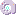
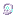
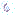
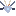
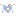
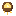

巨神と背中Titans and their backs
四体の巨神の姿、乗り方、背中の三つの部屋、心臓、領域。五章の深淵の入口も。仕組みだけを書いています。Four titans and the fifth chapter, the abyss: how to board, the rooms on each back, the hearts and domains. Mechanics only.
四体の巨神The four titans
巨神の背中は、それ自体がダンジョンです。巨神ごとに、背中の遊び心地も、乗り方も違います。A titan's back is itself the dungeon. Each titan plays differently and is boarded differently.
| 巨神Titan | 推奨 LvRec. Lv | どこにいるWhere | 乗り方Boarding | 心臓を止めたあとの上限 LvLevel cap after its heart |
|---|---|---|---|---|
| 一章 岩鯨Chapter 1 Stone Whale | 12 | 空The sky | 空から垂れる鎖を右クリックRight-click the chain lowered from the sky | 2121 |
| 二章 潮殻Chapter 2 Tide Shell | 18 | 海The sea | 干潮のころ、浅瀬の「潮門」を泳ぐか舟でくぐるAt low tide, swim or boat through the tide gate | 2727 |
| 三章 雷翼Chapter 3 Thunder Wing | 24 | 空の嵐と高い峰Storm skies and high peaks | 夕立のころ、峰に立つ「昇り風」に入るAt the evening squall, step into the updraft on the peak | 3333 |
| 四章 余燼Chapter 4 Ember | 30 | 陸の地面の中Under the land | 夜、息を吸うあいだに口の中へ歩いて入るAt night, walk into the mouth while it inhales | 4040 |
推奨より 3 レベルを超えて上だと、倒したときの経験値が減ります。物語の進みで上限が決まります（最初は 15）。More than 3 levels above the recommendation reduces XP. Story progress sets the level cap (15 at the start).

一章Chapter 1 岩鯨Stone Whale
空を泳ぐSwims the sky属性: 空・岩Theme: Sky / stone推奨 Lv 12Rec. Lv 12
空を泳ぐ、岩のような巨大な鯨。ときどき降りてきて、背中の錨石から鎖を地上へ垂らします。背中は同じ形の鯨のブロックの島で、尾の付け根の広場から、苔むした背を歩いて祠へ向かいます。A huge rock-like whale swimming the sky. Now and then it descends and lowers a chain from the anchor stone on its back. The back is an island shaped like the whale; you walk the mossy spine to a shrine.
乗り方How to board
岩鯨が降りてくると、左のわき腹から鎖が垂れます。右クリックで背中へ引き上げられます。三日目の夕方に姿を現し、遅くとも五日目には現れます。降りるときは背中の錨石を右クリックします。When the whale descends, a chain hangs from its left flank; right-click it to be hoisted up. It appears on the evening of day three (day five at the latest). To leave, right-click the anchor stone.
歩・智・闘の部屋と中ボスRooms: traverse, wit, combat, and the mid-boss
- 歩 骨玉運びTraverse: bone ball carry 骨玉を祭壇まで運びます。持つあいだは遅く、跳べません。Carry a bone ball to the altar. You move slowly and cannot jump while holding it.
- 智 共鳴の骨Wit: resonant bones 骨が鳴った順に叩き返します。Strike the bones back in the order they chimed.
- 闘 鯨の核を守るCombat: guard the whale core 三つの波を、核を守りきって越えます。Hold the core through three waves.
- 中ボス 鯨骨の番兵長Mid-boss: Whalebone Warden Captain 三つの部屋のあと、中ボスの間へ運ばれます。After the three rooms you are carried into the mid-boss chamber.
心臓The heart
岩鯨の心臓は 3 段階。体力が半分を切ると領域を広げます。The Stone Whale's heart has three phases and opens its domain below half health.
領域「石の海」Domain: "Sea of Stone" 心臓は傷を受けなくなり、広がる輪を跳んで越えながら、部屋の三本の共鳴する骨を、鳴った順に叩き返すと解けます。The heart becomes invulnerable. Jump over the expanding rings and strike the three resonant bones back in the order they chimed to break the domain.
ここで手に入る装備Gear from this titan
 鯨骨の大剣Whalebone Greatsword
鯨骨の大剣Whalebone Greatsword 番兵長の鉾Captain's Glaive
番兵長の鉾Captain's Glaive 水路の顎牙Waterway Fang
水路の顎牙Waterway Fang 岩鯨の補強板Stone Whale Plating
岩鯨の補強板Stone Whale Plating 岩鯨の甲殻の胸当てStone Whale Chestplate
岩鯨の甲殻の胸当てStone Whale Chestplate

二章Chapter 2 潮殻Tide Shell
海を歩くWalks the sea属性: 海・潮Theme: Sea / tide推奨 Lv 18Rec. Lv 18
海の底を歩く、山のような大亀。甲羅の上に「潮の民」の遺跡と珊瑚礁を乗せています。背中の亀の島では、2 分ごとの満ち引きで通れる道が変わります。A mountain-sized sea turtle walking the seabed, carrying the ruins of the Tide Folk and a coral reef on its shell. On its back the tide changes every two minutes and with it the paths you can take.
乗り方How to board
朝と夕の干潮のころ、巨神は浅瀬へ寄って休みます。甲羅の脇にできる「潮門」を、泳ぐか舟でくぐります。二章で拾える「潮見の貝」を持つと、向き・距離・次の干潮までの時間が分かります。At morning and evening low tide it rests in the shallows. Swim or boat through the tide gate beside the shell. The Tide-Watching Shell found in chapter 2 shows direction, distance and time until low tide.
歩・智・闘の部屋と中ボスRooms: traverse, wit, combat, and the mid-boss
- 歩 真珠の灯り運びTraverse: pearl light carry 真珠を持つ人だけが照らせます。持つ人が道を選びます。Only the person holding the pearl can light the way; that person picks the route.
- 智 貝の音合わせWit: shell tune match 同じ音の貝を探して、音を合わせます。Find the shells that play the same tone and match them.
- 闘 珊瑚の苗を守るCombat: guard the coral saplings 苗を狙う群れから守り切ります。Defend the saplings from the swarm.
- 中ボス 潮招きMid-boss: Tide Beckoner 三つの部屋のあと、中ボスの間へ運ばれます。After the three rooms you are carried into the mid-boss chamber.
心臓The heart



潮殻の心臓は 3 段階。体力が半分を切ると領域を広げます。The Tide Shell's heart has three phases and opens its domain below half health.
領域「合わせ貝」Domain: "Matching Shells" 心臓は傷を受けなくなり、同じ印の板を叩いて合わせます。水は出ません。The heart becomes invulnerable. Strike the plates that bear the same mark to match them. No water rises.
ここで手に入る装備Gear from this titan
 潮殻の三叉槍Tide Shell Trident
潮殻の三叉槍Tide Shell Trident 珊瑚の盾Coral Shield
珊瑚の盾Coral Shield 潮招きの大鋏Tidecaller's Claw
潮招きの大鋏Tidecaller's Claw 珊瑚憑きの銛Coral Thrall's Harpoon
珊瑚憑きの銛Coral Thrall's Harpoon 月潮の真珠Moontide Pearl
月潮の真珠Moontide Pearl 潮殻の胸甲Tide Shell Cuirass
潮殻の胸甲Tide Shell Cuirass

三章Chapter 3 雷翼Thunder Wing
嵐をまとうWears the storm属性: 雷・風Theme: Lightning / wind推奨 Lv 24Rec. Lv 24
嵐を衣のように纏って雲の下を飛ぶ、山のような鳥。雨の幕の中で稲妻が光るたびに、巨大な翼の形が一瞬だけ浮かびます。背中は嵐の雲を突き抜けた上にあります。A mountain-sized bird flying beneath clouds, wearing a storm like a cloak. Each lightning flash reveals the shape of its vast wings for an instant. Its back lies above the storm clouds.
乗り方How to board
午後の夕立のころ、近くのいちばん高い峰に降りて止まります。足もとに「昇り風」の柱が立つので、入ると背中へ運ばれます。風見鶏を持つと次の夕立までの時間と距離が分かります。At the afternoon squall it lands on the highest nearby peak. An updraft column rises at your feet and carries you to its back. A weathercock shows the time to the next squall and the distance.
歩・智・闘の部屋と中ボスRooms: traverse, wit, combat, and the mid-boss
- 歩 避雷の羽運びTraverse: lightning-rod feather carry 羽を持つ人に雷が落ちます。避雷の柱へ導いて運びます。Lightning strikes whoever carries the feather; lead it to the rods.
- 智 銅の回路つなぎWit: copper circuit hookup 銅の線をつないで、雷の道を通します。Connect copper wires to route the lightning.
- 闘 帯電の連鎖Combat: charged chain 雷の連鎖を断ちながら進みます。Break the chain of lightning as you advance.
- 中ボス 雷獣Mid-boss: Thunder Beast 三つの部屋のあと、中ボスの間へ運ばれます。After the three rooms you are carried into the mid-boss chamber.
心臓The heart


雷翼の心臓は 3 段階。部屋で扱った雷と羽の仕掛けが、心臓の戦いにも出ます。The Thunder Wing's heart has three phases, and the lightning and feather mechanics from its rooms return in the fight.
領域「雷の檻」Domain: "Cage of Thunder" 心臓は傷を受けなくなり、三本の避雷の柱が順に雷を溜めます。溜まりきる前に叩いて地へ逃がし、三本とも打てば解けます。The heart becomes invulnerable. Three lightning rods charge one after another; strike each to ground the bolt before it fully charges.
ここで手に入る装備Gear from this titan
 雷翼の弓Thunder Wing Bow
雷翼の弓Thunder Wing Bow 雷獣の爪Raiju Claw
雷獣の爪Raiju Claw 羽守の鉤槍Warden's Hooked Glaive
羽守の鉤槍Warden's Hooked Glaive 嵐の目の羽根Feather of the Storm's Eye
嵐の目の羽根Feather of the Storm's Eye 嵐纏の足環Stormclad Anklet
嵐纏の足環Stormclad Anklet 雷翼の羽衣・胸当てThunder Wing Mantle Breastplate
雷翼の羽衣・胸当てThunder Wing Mantle Breastplate

四章Chapter 4 余燼Ember
地を泳ぐSwims the earth属性: 火・熱Theme: Fire / heat推奨 Lv 30Rec. Lv 30
地の中を泳ぐ、山のような火蜥蜴。昼は土の下を進み、夜に地上へ浮かび上がって火山のように眠ります。体は熱く、背中にいるあいだ一人ずつに「熱」がたまります。A mountain-sized fire lizard swimming through the earth. By day it travels underground; at night it rises and sleeps like a volcano. Its insides are hot, and while you are on its back each player accumulates heat.
乗り方How to board
夜、地面に顎を下ろして眠ります。息を吸うあいだだけ口が開くので、そのあいだに自分の足で口の中へ歩いて入ります。雷翼のあとに渡される温石で、向きと距離が分かります。At night it rests its jaw on the ground. The mouth opens only while it inhales; walk in on your own feet during that time. A warm stone, given after Thunder Wing, shows direction and distance.
歩・智・闘の部屋と中ボスRooms: traverse, wit, combat, and the mid-boss
- 歩 熾火運びTraverse: ember carry 熾火を冷める前に炉へ運びます。Carry embers to the furnace before they cool.
- 智 鍛冶の手順Wit: forging steps 壁画の順に、鍛冶の手順をなぞります。Follow the forging steps in the order of the mural.
- 闘 炉を守るCombat: guard the furnace 炉を守って、押し寄せる敵を退けます。Protect the furnace and hold back the foes.
- 中ボス 灰の鍛え手Mid-boss: Ashen Smith 三つの部屋のあと、中ボスの間へ運ばれます。After the three rooms you are carried into the mid-boss chamber.
心臓The heart

余燼の心臓は 3 段階。体力が半分を切ると領域を広げます。The Ember's heart has three phases and opens its domain below half health.
領域「炉心」Domain: "Furnace Core" 心臓は傷を受けなくなり、三つの熾の核のそばでしゃがみ続けて冷まします（熱い床の予告を避けながら）。三つ冷ませば解けます。The heart becomes invulnerable. Crouch beside each of three ember cores to quench them while dodging heated floor telegraphs.
ここで手に入る装備Gear from this titan
 余燼の戦斧Ember War Axe
余燼の戦斧Ember War Axe 鍛え手の大鎚Ash Smith's Sledge
鍛え手の大鎚Ash Smith's Sledge 灰の番人の火掻きThrall's Poker
灰の番人の火掻きThrall's Poker 余燼の灯Last Ember Lantern
余燼の灯Last Ember Lantern 熾火の外套Embercloak
熾火の外套Embercloak 余燼の胸当てEmber Breastplate
余燼の胸当てEmber Breastplate
巨神の共通の決まりRules shared by all titans
乗る資格と順番Boarding and order
- 巨神は岩鯨 → 潮殻 → 雷翼 → 余燼の順に現れます。誰かが前の心臓を止めると、次が世界に現れます。Titans appear in order: Stone Whale, Tide Shell, Thunder Wing, Ember. When someone stops the previous heart, the next appears.
- 乗れるのは、自分で前の心臓を止めた人です。連れていってもらうことはできません。You can board only if you stopped the previous heart yourself; you cannot be carried along.
- 乗れるときは、乗り込み口が遠くからでもほのかに脈打つ光で分かります。When you may board, the entrance pulses with a faint glow, visible from afar.
- 巨神は止まってから約 20 分のあいだ乗れます（残り 2 分と 30 秒に知らせ）。A titan stays boardable for about 20 minutes (warnings at 2 minutes and 30 seconds left).
背中の決まりRules on the back
- サバイバルではブロックを壊せず、置けません。作業台・かまど・チェストなどの野営の道具は、離れた地面に一人 8 個まで置けます。In survival you cannot break or place blocks. Camp tools such as a crafting table, furnace or chest can be placed on safe ground (up to 8 per player).
- エリトラ・エンダーパール・ウィンドチャージ・花火・バケツなど、部屋を飛ばせる物は使えません。Elytra, ender pearls, wind charges, fireworks, buckets and anything else that skips a room is blocked.
- 倒れても持ち物と経験値は残り、休み場の焚き火から再開します。Dying keeps your items and XP; you resume at a rest campfire.
- 端から落ちると、それぞれの巨神の決まりで戻されます（岩鯨は滑空、潮殻は潮流、雷翼は嵐、余燼は灰）。Falling off sends you back in each titan's own way (glide, tide, storm, ash).
- 部屋は何度でも挑めます。パーティの誰も背中にいなくなって約 3 分で、そのパーティの順路は最初に戻ります。Rooms can be repeated. About 3 minutes after nobody from your party remains, that party's route resets.
心臓の戦いHeart fights
- 心臓の戦いで倒れたら、前室で目を覚まし、20 秒後に戻れます（1 戦に 3 回まで）。戻ると 3 秒の守りがあります。If you fall in a heart fight you wake in the antechamber and may re-enter after 20 s (3 times per fight), with 3 s of protection.
- 敵の技は床に予告が出ます。橙〜赤の実線は傷、青白い破線は安全な筋、灰は押されるだけです。Attacks are telegraphed on the floor: orange to red solid is damage, pale dashed is a safe lane, gray only pushes.
- 体力が半分を切ると、一度だけ「領域」が広がります。領域のあいだ心臓は傷を受けず、部屋に立つ三つの仕掛けを解くまで続きます。解けると心臓は 5 秒のあいだ傷を 1.5 倍受けます。決まりの傷はすべて床の予告から出て、仕掛けは一人でも解けます。When its health drops below half, the heart opens a domain once. During it the heart cannot be damaged, and it lasts until you solve three gimmicks in the room; solving them leaves the heart taking 1.5x damage for 5 seconds. All domain damage is telegraphed on the floor and the gimmicks are solvable solo.
- 一方向に回り続けるだけでは勝てません。止まる・逆へ回る・跳ぶ・内外へ出る、で避けます。Circling in one direction forever will not work. Stop, reverse, jump or move in and out.
備えの三灯The three readiness lamps
乗り込み口に近づくと、今の備えが三つの灯で出ます。身（防具）・刃（武器）・糧（回復と護りの品）です。Near an entrance your readiness shows as three lamps: body (armor), blade (weapon) and provisions (healing and protection).
足りない灯があると「このまま乗る？」と聞かれ、5 秒以内に同じ操作をすると乗れます。If a lamp is short you are asked to confirm; repeat the action within 5 seconds to board.
部屋の組と、くり返しRoom draws and repeats
各背は、歩・智・闘の三つの枠を持ち、枠ごとに 2 つの部屋があります。周回するたびに枠ごとに一つ選ばれるので、同じ背でも遊びが変わります。Each back has three slots (traverse, wit, combat) with two rooms apiece. Each cycle draws one room per slot, so the same back plays differently.
順路Route
歩 → 智 → 闘 → 中ボス → 心臓の、一本道です。各枠は 2 部屋のどちらかが選ばれ、周ごとに変わります。Traverse, then wit, then combat, then the mid-boss and the heart, in one line. Each slot draws one of its two rooms, and the draw changes each cycle.
一人でも、仲間とでもSolo or together
どの部屋も一人で越えられます。分担すると速くなり、部屋の戦いは中にいる人数に合わせて強くなります。Every room can be cleared alone. Sharing the work is faster, and fights grow with the number of people inside.
部屋の報い（次の版から）Room rewards (next version)
部屋を越えると、素材・共鳴の欠片・称号が渡ります。称号は巨神ごとに 3 つ（順路・六部屋・崩れなし）です。Clearing rooms will grant materials, resonance fragments and titles. Each titan has three titles: route, six rooms and no collapse.
全員が倒れたらIf everyone falls
その部屋の最初から始まります。背のパーティの全員がいなくなって約 3 分で、順路は最初に戻ります。The room restarts from its beginning. About three minutes after no one from the party is on the back, the route resets.
部屋の組は順次増えています。深淵の難度は転生のページへ。More room draws are being added. For Abyss difficulty see Rebirth.
大きくなった背Bigger backs
6 人のパーティが動けるように、四つの背を作り直しました。体は水平に ×1.6、垂直に ×1.3 前後で、部屋の面積は 2.6 倍以上、広間は約 3.5 倍です。The four backs were rebuilt so a party of six can move. Bodies are 1.6x wider and about 1.3x taller, rooms are at least 2.6x the area and halls about 3.5x.
通路と広間Corridors and halls
通路は幅 7・高さ 6 が標準で、6 人が並んで通れます。心臓の間だけは戦いの手ごたえを保つため、広げすぎていません。Corridors are 7 wide and 6 high, so six can walk abreast. Only the heart chamber stays modest to preserve the fight's feel.
2 本の道Two lanes
部屋は 2〜3 本の道と役割のある仕掛けを持ち、一人でも解けます（重りや留めが人の代わりをします）。Rooms offer two to three lanes and role-based gimmicks, and every one is solvable solo (weights and latches stand in for people).
任意の翼Optional wings
必須の道のほかに、寄り道の翼・塔・庭があり、宝や読み物が置かれています。Beyond the main path there are optional wings, towers and gardens with treasure and lore.
歩ける広さWalkable space
雷翼の歩ける床は約 29,300 m²。それでも歩きは 1 分未満で、時間は部屋と戦いで使います。Thunder Wing has about 29,300 m² of walkable floor. Walking still takes under a minute; time goes to rooms and fights.
巨神の子と旅Young carriers and travel
成体の巨神は、もう動き回りません。遠くへの旅は、笛で呼ぶ「子」（巨神の分かれた鼓動、歌のかけら）が運びます。Adult titans no longer roam. Long journeys are carried by a young one, a split beat of the titan, summoned with a whistle.
- 呼ぶ。笛（潮殻は貝）を使うと、巨神の子が現れます。子は乗っている間だけいます。Summon. Use the whistle (a conch for Tide Shell) and a young carrier appears. It exists only while someone rides it.
- 全員で乗る。パーティ全員（最大 6 人）が乗れます。Ride together. The whole party, up to six, can ride.
- 行き先を選ぶ。持ち主が海図から、はじまりの地・覚えた碑・出会った巨神のいる場所を選びます。行き先は子の得意で限られ、選べないものには理由が付きます。Pick a destination. The owner chooses from a chart: the starting land, remembered tablets or the places of titans you have met. Each young carrier has strengths that limit destinations, and unavailable ones show why.
- 出発。全員が乗っていれば約 3 秒、64 ブロック以内に乗っていない仲間がいれば約 15 秒（最大 30 秒）待ちます。遠い旅は途中で雲の帳に包まれます。Depart. About 3 seconds if everyone is aboard, about 15 (up to 30) if a party member within 64 blocks has not boarded. Long trips pass through a veil of cloud.
- 着く。行き先が成体なら、足もとの光の輪に立つと背へ入れます（この旅に乗っていた人だけ）。全員が降りると、子は歌に溶けて消えます。Arrive. If the destination is an adult titan, stand in the glowing ring at your feet to enter its back (riders only). Once everyone dismounts the young carrier dissolves into song.
親の巨神が眠れば、子も眠ります。誰も乗らないまま 20 秒、行き先を決めないまま約 2 分で子は溶けます。If the parent titan sleeps, so does its young one. A young carrier dissolves after 20 seconds with no rider, or about 2 minutes without a destination.
心臓を止めたあとAfter the heart stops
巨神は眠りにつくThe titan sleeps
心臓を止めても巨神は死にません。鼓動が止まり、深い眠りにつきます。少し静かになって背中が震えたあと、戦った人とそのパーティは巨神の足もとへ降ろされます。眠っているあいだ、巨神は動かず、歌わず、乗れません。鼓動が戻ると、また目を覚まします。Stopping the heart does not kill the titan: its beat halts and it falls into deep sleep. After a quiet moment and a tremor, the fighters and their party are set down at its feet. While asleep it neither moves, sings nor can be boarded; when the beat returns it wakes.
報酬Rewards
参加した人それぞれに、天の鍵の欠片（一人一つ）、経験値、装備が渡ります。四つの欠片がそろい、四体の心臓を自分で止めると、欠片は一つの天の鍵になります。Every participant gets a sky-key fragment (one each), XP and gear. Collect all four fragments by stopping all four hearts yourself and they become a single sky key.
心臓の遺物の選択Choosing a relic
心臓を初めて止めたあと、眠りの場面が終わると専用の画面が開き、その巨神の専用の遺物から一つを選びます。パーティの仲間もそれぞれ自分で選びます。「あとで」にして、旅嚢・控え帳・コマンドから開き直せます。After first stopping a heart, a dedicated screen opens when the sleep scene ends and you choose one of that titan's dedicated relics. Party members choose individually. You can postpone it and reopen from the satchel, record book or a command.
周回Repeat runs
部屋と心臓は何度でも挑めます。専用装備は周回で揃い、共鳴の炉で強化・再鍛造・交換できます。Rooms and hearts can be repeated. Dedicated gear fills in over repeat runs and can be enhanced, reforged and traded at the Resonance Forge.

五章 深淵Chapter 5: The Abyss
地の底へ降りるDescend into the deep地の底（都の地下から）Deep below (from under the capital)
四体の心臓を返したあとも、空は静かになりません。都の地下の戸の向こうに、底の見えない大きな縦穴が口を開けています。巨神の背とは別の、深淵という世界です。Even after the four hearts the sky does not settle. Past the door under the capital yawns a shaft with no visible bottom: the abyss, a world apart from any titan's back.
縦穴を下りるDown the shaft
一続きの旅として下ります。骨・雷の層は道を探して進み、塩・灰の層は生き残りを守って降ります。層ごとに違う遊びがあります。層のあいだの灯りで、再開できます。One continuous descent through four layers (bone and storm are explored, salt and ash are escorted), each with its own play. Lantern rests between the layers let you resume.
深淵の術Abyss arts
層ごとの溜まりで、光・重さ・鼓動の三つの術を覚えます。覚えた術は、次の層の道を開きます。深淵術師の木で育てます。Learn three arts at the pools of each layer: light, weight and heartbeat. Each opens the way ahead. Grow them in the Abyss Caster tree.
重さと闇Weight and dark
上るほど体が重くなり、光の届かない所に長くいると、淵の声がたまります。深く潜るほど、敵は強くなり、深度の数字が上がります。The climb grows heavier, and long stays in the dark gather the voice of the deep. The deeper you go, the stronger the foes and the higher the depth number.
底の番人The warden below
底には、姿を見せない番人がいます。見えるのは、灯りの中だけです。At the bottom waits a warden that does not show itself. It is seen only in lantern light.
クリアのあとAfter the clear 番人の悪夢（段 1〜10）、前の自分たちの遺品 12 種、そして果てのない深みが残っています。The warden's nightmare (tiers 1 to 10), twelve past-self relics and endless depths remain.
物語の答えと、番人の戦いの細かい決まりは書いていません。難度は転生のページ、深淵術はスキルのページへ。The answers to the story and the warden's fight details are not written here. For Abyss difficulty see Rebirth; for the abyss arts see Skills.